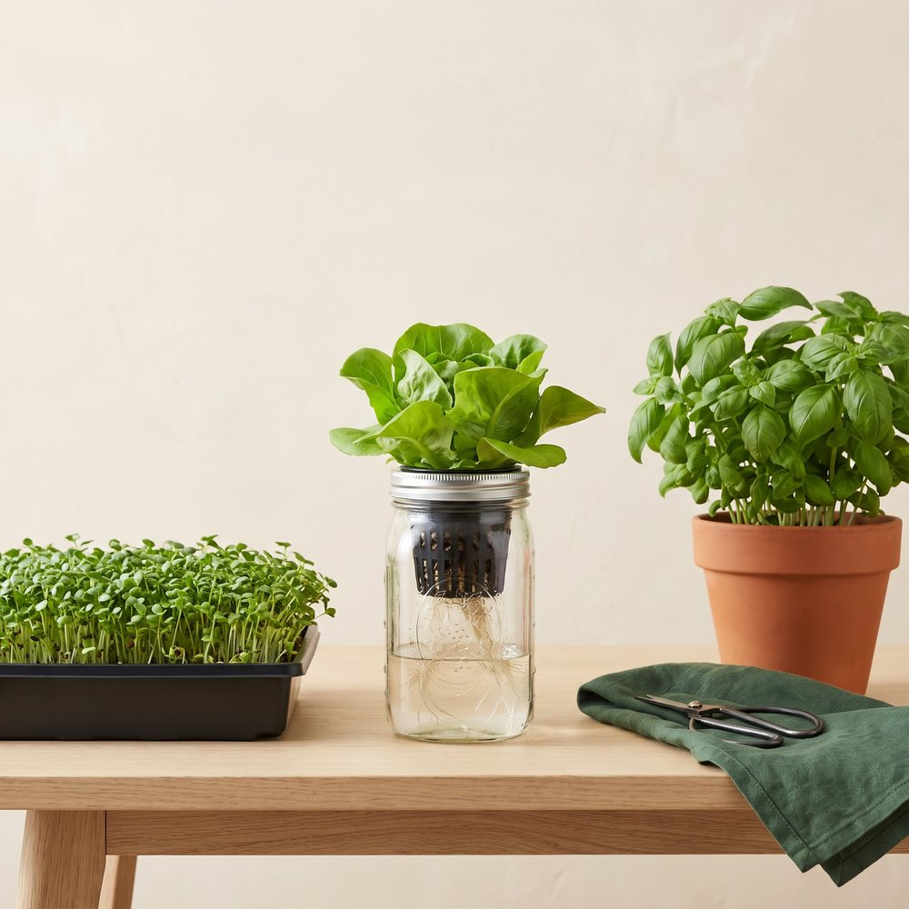
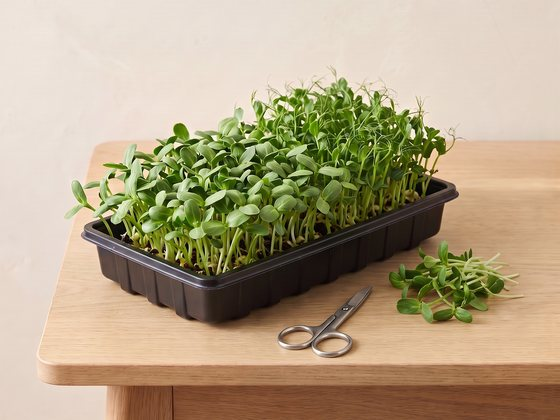
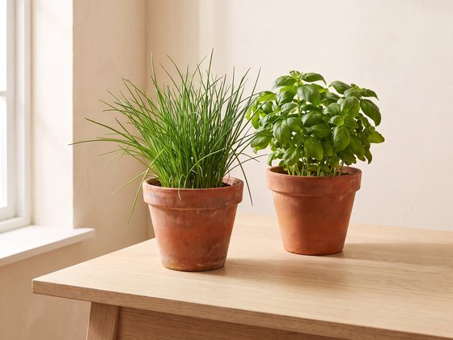
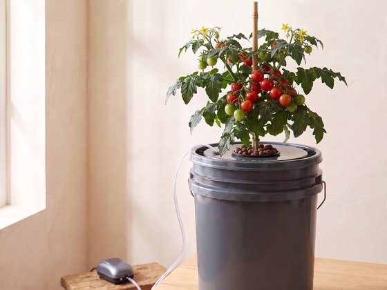
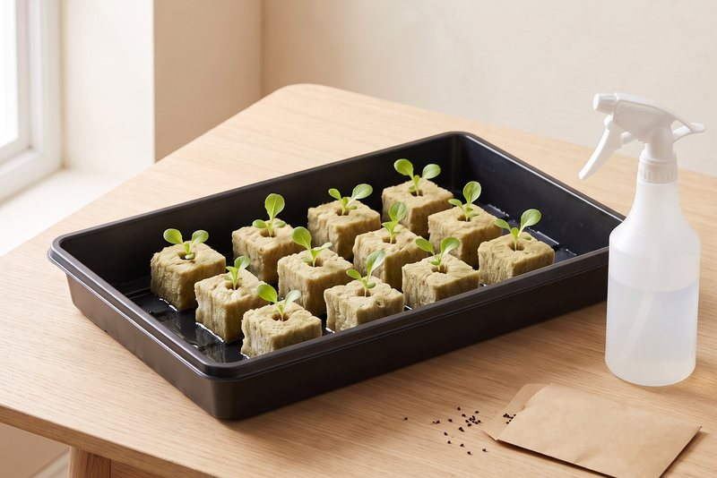
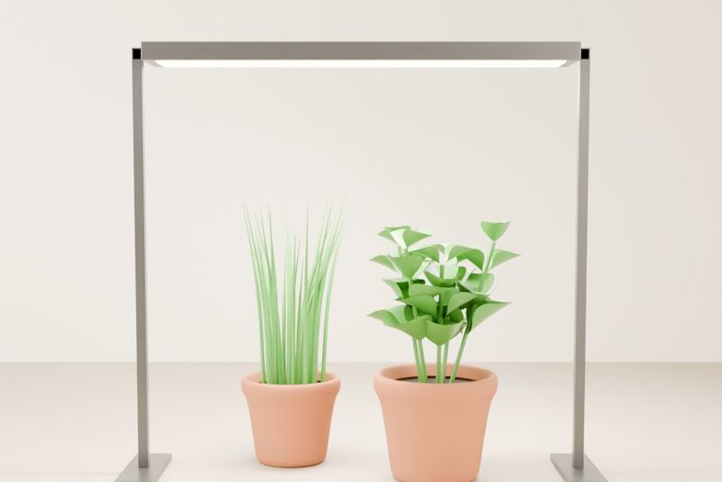
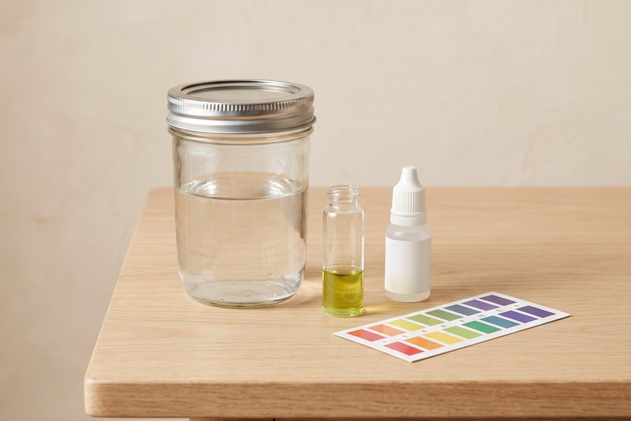
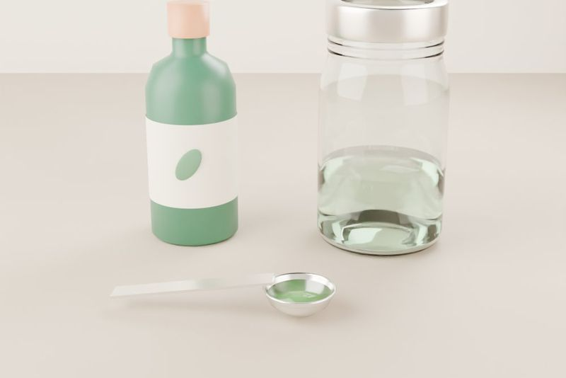

A community for indoor growers
Learn to grow food indoors, together.
Fresh greens all year, even through the longest winter. No garden, no experience, and no fancy gear needed.

- No garden needed
- Grow in any season
- Free guides, always
01 Our mission
Grow enough to feed yourself, then enough to share.
The Root Collective Project helps people learn to grow their own food indoors, using hydroponics (growing in water instead of soil), soil, microgreens, and other simple methods.
-
Feed yourself
Learn to grow enough fresh food at home that you can rely on it, all year round.
-
Then feed your community
Grow extra, share it with neighbours, and donate the surplus to local food banks.
02 Who it's for
Anyone with a windowsill and a little curiosity.
- Total beginners who have never grown anything
- Hobbyists who want to try hydroponics or improve their setup
- Apartment dwellers and anyone without outdoor garden space
- Anyone, anywhere who wants to grow some of their own food
03 Our story
It started with a grocery bill and no garden.
Food prices kept climbing, and we wanted a garden but had no room for one. So we started looking for better ways to grow food at home, without a backyard.
We're learning as we go. Our first experiments are hydroponic jars, with lids and net cups we design and 3D print ourselves. Some things work and some don't, and we'll share both.
The hope is simple: help more people grow some of their own food, depend a little less on long supply chains, know exactly how their food was grown, and pass what they learn on to the next person.
The Root Collective
04 Ways to grow
Many ways to grow. Pick the one that fits your home.
There's no single right way. Some methods use soil, some use water, and some fit on a windowsill. We'll help you learn them all. New to growing? Check the basics below too.
 Beginner · No power
Beginner · No power
Water jars
A plant sits in a jar of water with plant food mixed in (called the Kratky method). No pumps or power. Great for lettuce and herbs.
Try growingLettuce, bok choy, kale, basil, mint, parsley, green onions
Read the guide
Beginner · FastestMicrogreens
Tiny seedlings grown close together on a tray and cut in about 1 to 3 weeks. The fastest harvest, and perfect for a windowsill.
Try growingRadish, broccoli, pea shoots, sunflower, mustard, arugula
Read the guide
Beginner · Most plantsPots of soil
Herbs, green onions, and even small tomatoes in containers, by a sunny window or under a grow light. The way most people start.
Try growingBasil, chives, thyme, green onions, spinach, dwarf cherry tomatoes, chili peppers
Read the guide
Next step · Uses a pumpBubble buckets
A bucket of plant-food water with a small air pump that bubbles air to the roots (called deep water culture). Grows big plants fast.
Try growingTomatoes, peppers, cucumbers, big basil bushes, kale
Read the guide05 The basics
Four things every grower needs to know.
Whichever way you grow, these come up again and again. Here's what to look for, with a guide for each.

Basics · Most methodsStarting seeds
How to get a seed to sprout and grow into a strong seedling, in soil or in a growing cube.
- Sprouts in about 3 to 7 days for most greens
- Give them strong light the day they pop up
- Ready to move at 2 to 4 true leaves

Basics · Every methodLight made simple
Window or grow light, how many hours, and how close. The thing indoor plants run short of most.
- Most food plants: 12 to 16 hours a day
- Tall and floppy? Not enough light
- Pale patches on top? Light too close

Basics · Water methodspH made simple
One number that decides whether your plants can use their food. Easy to test with a few drops.
- Water methods: aim for 5.5 to 6.5
- Pots of soil: 6.0 to 7.0, rarely needs testing
- Pale or yellow leaves? Check pH first

Basics · Water and soilPlant food made simple
What to buy, how to mix it, and how strong. In water, it's everything your plant eats.
- Water methods: use hydroponic nutrients
- Young plants: half strength or less
- Brown, crispy tips? Mix it weaker
The simplest setup: lettuce in a jar.
Want something low-effort? This is one of the cheapest and simplest ways to grow. A glass jar, some plant food, and a seed are all it takes, with no pumps and no power.
Read the full guideWatch it grow

Times are rough and change with light and temperature.
The fastest harvest: microgreens.
Want results this week? A shallow tray, some soil, and a pack of seeds are all you need. Most microgreens are ready to cut in about 1 to 3 weeks, right on a windowsill.
Read the full guideWatch it grow

Times are rough and change with your seeds, light, and temperature.
07 Join
Grow with us.
Joining is free. You'll get our beginner guides as they come out, and meet other people learning to grow.
Sign up for new guides by email. Join the Discord to share setups and ask questions.
We only use your email to send Root Collective updates, and you can ask us to remove it anytime.